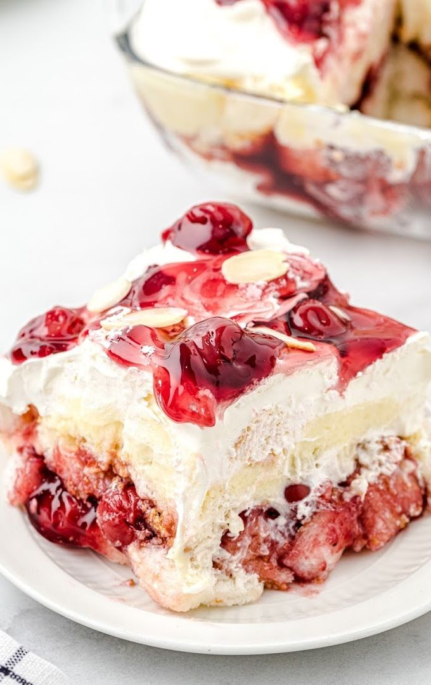

-1.jpg)
1. Krunky Sandwich
A mouthwatering delight with a crispy, golden-brown chicken fillet nestled between a soft brioche bun.
.jpg)
2. Overloaded Double Decker
It is an overloaded two layer burger with two crispy patties and filled with extra cheese and love.
.jpg)
3. Garlic Chilli Slices
Garlic chilli slices is a special variety of breads stuffed with garlic sauce and chilli flakes. Upper layer is coated with mozzarella cheese.
.jpg)
4. The Baconator
The Baconator is a juicy wheesy pizza with spinach nack and tomato smuck.
.jpg)
5. Loaded Pile
They are known for being a hearty; french fries generously topped with various ingredients like cheese, sauces, and meat.
.jpg)
6. Strawberry Honey Pancakes
Strawberry and honey is combined in the batter to enhance the hidden taste of strawberries. They are made into pan cakes and topped with berries and honey.
.jpg)
7. Blue Bannana French Toast
Assortment of fresh blueberries and bannanas with milk and bread toasted by butter. It melts yourself from your own world!
.jpg)
8. Pispink Waffles
Greeny and pinky Waffles flavoured of raspberry and green apple. It has its own customisation on its stuffing and toppings.
.jpg)
9. Wavy Cappuccino
A cappuccino is a popular coffee beverage, traditionally made with equal parts espresso, steamed milk, and milk foam, creating a balanced and frothy experience.
.jpg)
10. Milk shakes
A milkshake is a sweet, cold drink typically made by blending milk, ice cream, and flavorings or sweeteners.

11. Malai Velvet
Sandwiched between the layers of cake lies a luscious filling of creamy, Rasmalai, red velvet pieces and cherries dotted with plump pieces of soft, spongy paneer and drenched in a decadent milk syrup.
.jpg)
12. MOJITO MOCKTAIL
Refreshing blend of lime, mint, and sparkling soda.